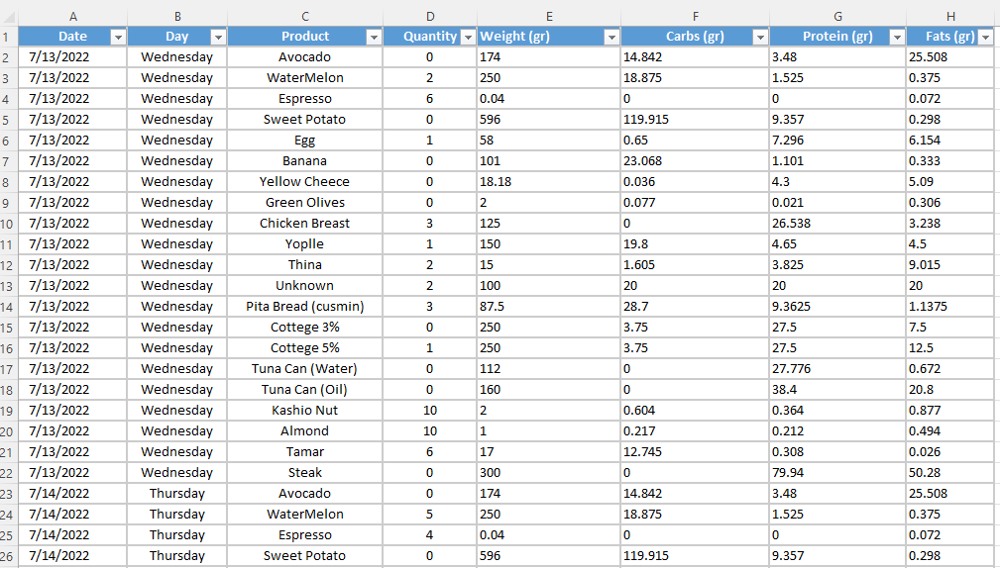
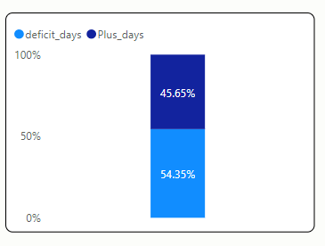
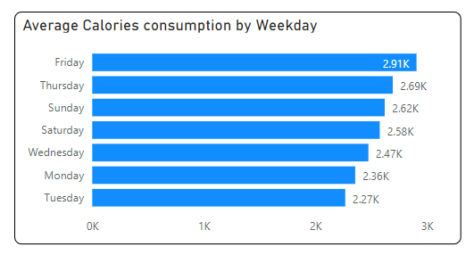
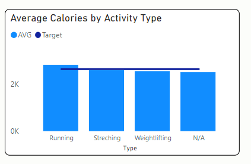
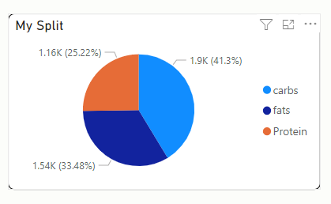

Background:
I tracked down closely my nutrition and my workout routine. Every day I wrote in an Excel Table what I ate (the product), Quantity, How much Carbs, Protein and Fats the Product contains (in grams), and overall Calories in that product.I took the data from websites that provide this information, and sometimes from the product’s package, this information is usually written in the back.
The Formula to calculate Calories (Energy) of a Product is (Carbs*4 + Protein*4+ Fats*9).
I Also Calculated my TEE – Total Energy Expenditure, which is the Resting Metabolic Rate (RMR) doubled by the Activity Factor (AF).
I’ve created a Procedure that takes your age, weight, height and Activity Factor and returns your TEE, meaning the amount of calories you should consume in a day. In my case it was 2,630.
If you eat less calories than that a day you’re in a “Calorie Deficit” – losing weight.
If you eat more than that you’re in a “calorie surplus” – gaining weight.

This is the Table I used to monitor my diet.
KPI's:
1. A calorie Deficit in that time period.2. Carbs calories 40%-45%
3. Protein calories 22%-25%
4. Fats calories 30%-33%
5. Gain insights to help me understand my habits and improve my nutrition.
Conclusions:
1. I was in a “Calorie deficit” more days than I was in a “calorie Surplus”, and I did actually lost weight in that time (about 3 KG).My Average deficit per Day was -64.34 (See Calculation in The SQL Code).

2. On Fridays I tend to eat more – Probably because Its harder to keep track on Friday dinner.

3. On Running Days I tend to eat more than My Target. It is possible that running is not beneficial if your only goal is to loss weight. It is beneficial for many other reasons so I’m going to keep doing it.

4. My split is 41.3% carbs, 25.22% Protein and 33.48% Fats, close to my Target. I can cut back on fat to reach the 30% level and increase my Carbs consumption (I don’t want to consume more than 25% Protein).
